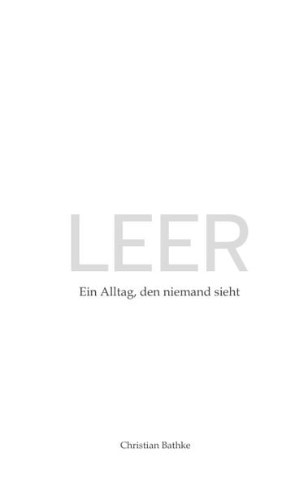

LEER
Ein Alltag, den niemand sieht
„LEER“ ist mehr als eine Geschichte – es ist ein Spiegel. Ein stilles Eintauchen in das, was wir so selten aussprechen: die Einsamkeit mitten im Leben. Ein Mann steht im scheinbar festen Gefüge seines Alltags – Arbeit, Freunde, eine Beziehung – und spürt doch, wie etwas in ihm verschwindet.
Dieses Buch schaut dorthin, wo wir uns nicht trauen hinzusehen. Es erzählt von den unscheinbaren Momenten, in denen die Fassade zu bröckeln beginnt, von der Stille zwischen zwei Menschen, die sich lieben, und vom langsamen Verblassen der eigenen Stimme im Lärm der Welt.
Eine zarte, ehrliche Hommage an das Menschsein – und eine Erinnerung daran, dass Leere kein Versagen ist, sondern ein Gefühl, das gehört werden will.
Taschenbuch 13,90 € · ISBN 978-3-384-62222-8 · auch als E-Book